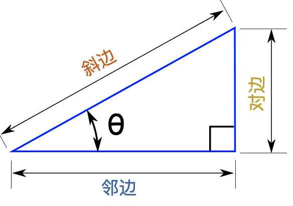
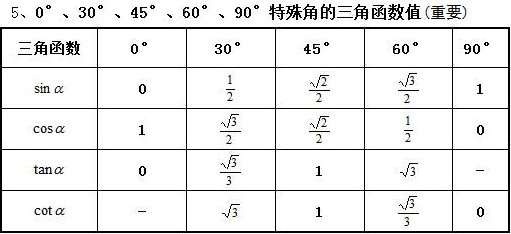
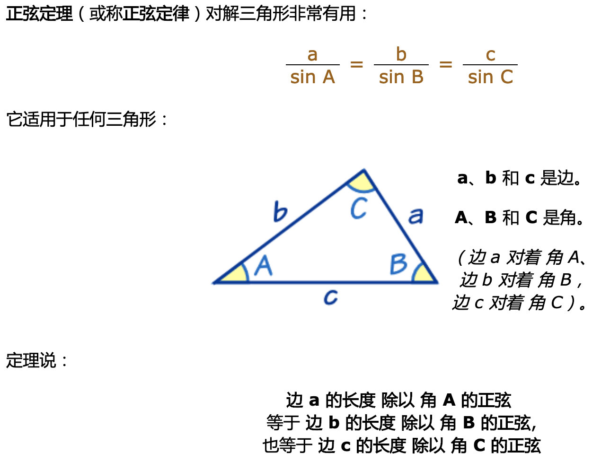
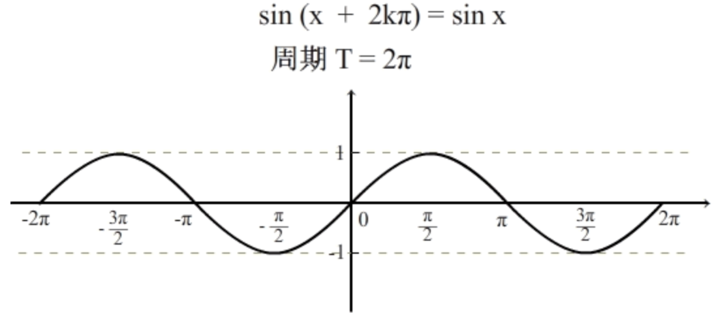
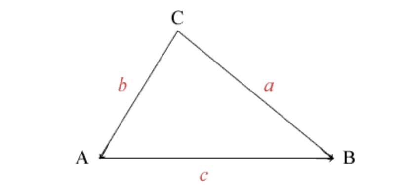
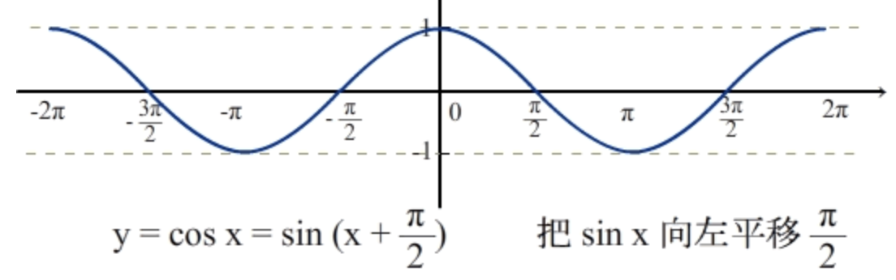
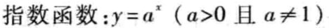
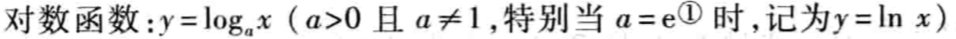
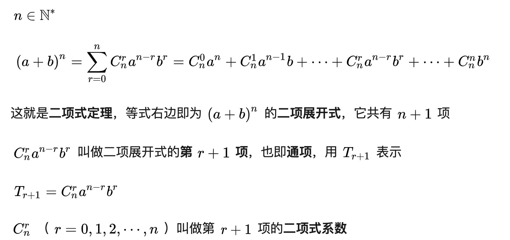
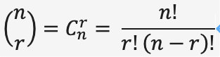

初等数学
有理数无理数
三角函数

特殊角度的三角函数值表

正弦
sinΦ = 对边/斜边
正弦定理

正弦函数图像

余弦
cosΦ = 邻边/斜边
余弦定理
三角形中任何一边的平方 = 其它两边的平方和减去这两边与它们的夹角的余弦的积的两倍。
$$
a^2 = b^2 + c^2 – 2bc * cosA
$$
$$
b^2 = a^2 + c^2 –2ac * cosB
$$
$$
c^2 = a^2 + b^2 – 2ab * cosC
$$

余弦函数图像

- cos x = sin (x + π/2)，即余弦函数的图像等于正弦函数向左平移 π/2 个单位长度。
正弦余弦函数图像动画
正切
tanΦ = 对边/邻边 = sinΦ/cosΦ
余切
正割
余割
反正弦
反余弦
反正切
反余切
欧拉常数e
指数和对数
$$
log_a(a^x) = x
$$
$$
a^{log_ax} = x
$$
$$
log_a{(m * n)} = log_am + log _an
$$
$$
log_a{(m / n)} = log_am - log_an
$$
$$
log_a{(1/n)} = -log_an
$$
$$
log_a{(m^r)} = r(log_am)
$$
$$
log_ax = \frac{log_bx}{log_ba}
$$
$$
log_ax = \frac{1}{log_xa}
$$
自然指数和自然对数
指数函数

对数函数

幂函数
幂函数运算
同底数幂函数运算
同指数幂函数运算
二项式定理
二项式展开与二项式系数

- 二项式系数等式

其中“!”代表 阶乘，例如 4！= 4*3*2*1 = 24
充分条件，必要条件
- 假设 A 是条件，B 是结论:
- 由 A 可以推出B,由 B 可以推出A，则A是B的充要条件（充分且必要条件）。
- 由 A 可以推出B,由 B 不可以推出A，则A是B的充分不必要条件。
- 由 A 不可以推出 B, 由 B 可以推出A，则A是B的必要不充分条件。
- 由 A 不可以推出 B, 由 B 不可以推出A，则A是B的不充分不必要条件。
- 简单一点就是：由条件能推出结论，但由结论推不出这个条件，这个条件就是充分条件。
- 如果能由结论推出条件，但由条件推不出结论,此条件为必要条件。
- 如果既能由结论推出条件，又能有条件推出结论,此条件为充要条件。